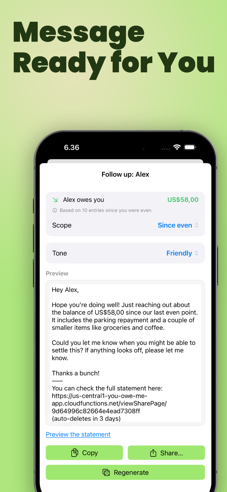
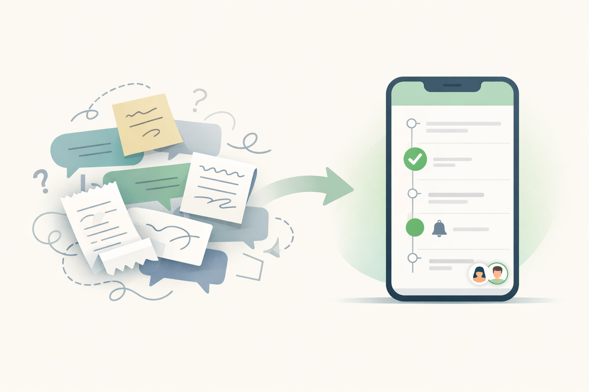

App to Track Money Owed
An App to Track Money Owed Without Awkward Follow-Ups
Money owed gets stressful when the amount lives in your memory, a note, or a half-forgotten chat thread. One person paid for dinner, someone borrowed cash, a partial repayment happened later, and now the hard part is remembering the real balance before you follow up.
YouOweMe helps you track what people owe you and what you owe them with a running balance, repayment history, reminders, partial repayments, and Money Conversations for clearer follow-up or repayment-update messages.
Instead of re-reading messages or guessing what changed, you keep one clear record of the balance and the conversation around it.
Good for personal IOUs, friend and family repayments, partner balances, small client balances, partial repayments, and follow-up messages.
Works offline • No mandatory sign-up • Face ID / Touch ID lock

If you are looking for an app to track money owed
Some people search for an app to track money owed. Others search for an IOU app, a who-owes-me-money app, a personal debt tracker, or a way to track borrowed money between friends. The job is the same: keep the balance clear enough that the next message does not start from guesswork.
YouOweMe is built for real-life back-and-forth balances, not only formal loans. It works when an amount changes over time, repayments are partial, the relationship matters, and you need a record plus a calm way to follow up.
Who this is for
An app to track money owed is most useful when the same balance may change, get repaid in parts, or become awkward if nobody keeps a clear record.
Friends and personal IOUs
For dinners, tickets, rides, small loans, travel costs, and everyday payback that people honestly forget.
Good fit for: money friends owe you, money you owe friends, small informal loans, and delayed payback.
Family members
For reimbursements, purchases made on someone else's behalf, recurring family costs, and balances that need calm structure.
Good fit for: parents, adult children, siblings, shared bills, and family repayments.
Partners and close relationships
For everyday balances where you want clarity without turning the relationship into scorekeeping.
Good fit for: uneven purchases, travel, groceries, short-term cover, partial repayments, and partner-specific shared spending.
Small client or side-work balances
For simple outstanding payments where you need a private record and polite follow-up, not a full accounting system.
Good fit for: small balances, reimbursable purchases, informal client repayments, and payment history.
What usually breaks
Most money-owed tension starts small. The problem is that memory, notes, and chat messages do not behave like a reliable balance.
The amount lives in memory
You remember the general situation, but not the exact total, date, or what changed after a partial repayment.
Partial repayments muddy the balance
Someone pays back part of what they owe, but the remaining amount is never written down clearly.
Chat history is not a ledger
Messages get buried under normal conversation, and the important numbers become hard to find later.
Reminders get delayed
The longer you wait, the more a simple follow-up starts to feel like a bigger conversation.
Both sides remember different versions
Without a shared record, the conversation can become about whose memory is right instead of what actually happened.
How YouOweMe helps you track money owed
The goal is not to make personal money feel formal. The goal is to keep enough clarity that repayment and follow-up stay easier.
Log the amount when it happens
Add what was borrowed, paid for, reimbursed, or covered so the balance does not depend on memory later.
Keep one visible running balance
See who owes whom right now without rebuilding the story from old messages.
Track repayments and partial repayments
When someone pays back part of the amount, update the history and keep the remaining balance clear.
Set reminders when timing matters
Use reminders for payback dates, overdue balances, or situations you do not want to keep carrying in your head.
Generate calmer follow-up messages
Money Conversations can help turn the real balance and history into a clear message in a tone that fits the relationship.
Keep history for later clarity
If the same person borrows, repays, and shares costs over time, the record stays together instead of scattering across notes and chats.
What people actually track
- Money lent to friends
- Dinners, tickets, rides, and trip costs
- Family reimbursements and purchases made on someone else's behalf
- Partner back-and-forth balances
- Partial repayments
- Payback dates and overdue reminders
- Simple client or side-work balances
- Recurring amounts someone needs to repay
- Repayment updates when you owe someone else
- Money owed after shared expenses turn into a balance
Why it works better than notes or chat history
Notes and chat messages can work for one tiny favor. They break down when money owed becomes ongoing, partial, or emotionally awkward.
When the system is notes or chat history
- The current balance is easy to miss
- Old numbers get buried
- Partial repayments are hard to reconstruct
- Reminders start from vague memory
- The other person may not see the same context
When the system tracks money owed
- Amounts and repayments live in one history
- The current balance stays visible
- Reminders connect to real context
- Follow-up messages can include a clear breakdown
- Less mental effort is required before you reach out
The better system is the one that keeps the balance clear before the conversation gets heavy.

What this looks like in real life
- A friend borrowed $80, paid back $30, and YouOweMe keeps the remaining $50 visible.
- You covered a family subscription this month and want it to show up again next month.
- A partner paid for groceries while you covered a larger cost later, and the running balance keeps the situation clear.
- A small client reimburses materials in two payments, and you keep the payment history in one place.
- Someone owes you after a trip, and Money Conversations helps you write a follow-up based on the actual balance.
Why people keep using it
The value is not only the math. It is the relief of having a clear balance, a visible history, and a calmer next message.
Easier loan and IOU tracking
Users describe YouOweMe as an easier way to track money they have loaned or are owed, with less stress around follow-ups.
Useful for family and partner repayments
Users mention managing money for elderly parents, partners, recurring charges, and repayments in one place.
Simple enough to keep using
Users call out fast transactions, multiple currencies, reminders, and recurring entries as reasons the app stays practical.
Based on review excerpts already featured on the site.
Frequently asked questions
What is an app to track money owed?
An app to track money owed keeps a record of who owes whom, what the money was for, repayments, partial repayments, reminders, and the current balance. The goal is clarity without rebuilding the story from memory.
Is YouOweMe an IOU app?
Yes. YouOweMe works as an IOU app for informal loans, shared purchases, reimbursements, and ongoing personal balances between people.
Can I track partial repayments?
Yes. You can log repayments as they happen so the remaining balance stays visible instead of getting lost in memory or chat history.
Can it help me ask someone to pay me back?
Yes. Money Conversations can help generate follow-up messages based on the real balance and history, in a tone that fits the relationship.
Can I track money I owe someone else too?
Yes. YouOweMe can track money owed to you and money you owe, and repayment-update messages can help keep trust clear when you are the one paying back.
Is this better than using notes or chat history?
For ongoing or repeated balances, usually yes. Notes and chats are easy to forget, hard to update after partial repayments, and not built around the current balance.
Does the other person need the app?
Not always. If you share a secure summary link from Money Conversations, the other person can view the context without installing the app.
Can I use it for client balances?
You can use it for simple small client balances, reimbursements, and repayment history, but it is not meant to replace a full accounting, payroll, or invoicing system.
Related solutions and guides
If your situation is more specific, these are the best next places to go.
Track money owed before it turns into an awkward follow-up
If money owed keeps reappearing in your life, you do not need to keep carrying the balance in your head. YouOweMe helps you keep amounts, repayments, reminders, history, and clearer follow-up messages in one place.
Built for personal IOUs, repayments, family balances, partner spending, small client balances, and everyday payback.